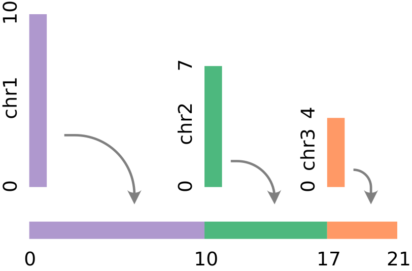

Genomic Coordinates¶

To allow easy visualization of coordinate-based genomic data, GenomeSpy can concatenate the discrete chromosomes onto a single continuous linear axis. Concatenation needs the sizes and preferred order for the contigs or chromosomes. These are usually provided with a genome assembly.
To activate support for genomic coordinates, add the genome property with the
name of the assembly to the top level view specification:
{
"genome": {
"name": "hg38"
},
...
}
Only a single genome assembly
Currently, a visualization may have only a single globally configured genome
assembly. Different assemblies for different scales (for x and y axes,
for example) will be supported in the future.
Supported genomes¶
By default, GenomeSpy loads genomes from the genomespy.app website. The
following assemblies are provided: "hg38", "hg19", "hg18", "mm10",
"mm9", and "dm6".
Custom genomes¶
At minimum, a custom genome needs a list of contigs and their sizes, which
can be loaded from a "chrom.sizes" file or provided inline.
Cytoband and Gene
annotation tracks require additional files.
As files¶
The baseUrl property specifies the location of genomes:
{
"genome": {
"name": "hg99",
"baseUrl": "https://your.site/genomes/"
},
...
}
The directory must have the following structure:
hg99/hg99.chrom.sizes
hg99/cytoBand.hg99.txt (optional)
hg99/refSeq_genes_scored_compressed.hg99.txt (optional)
Inline¶
Example:
{
"genome": {
"contigs": [
{"name": "chr3R", "size": 32079331 },
{"name": "chr3L", "size": 28110227 },
{"name": "chr2R", "size": 25286936 },
{"name": "chrX", "size": 23542271 },
{"name": "chr2L", "size": 23513712 },
{"name": "chrY", "size": 3667352 },
{"name": "chr4", "size": 1348131 },
]
},
...
}
Cytobands and genome annotations cannot be provided inline.
Encoding genomic coordinates¶
When a genome assembly has been specified, you can encode the genomic
coordinates conveniently by specifying the chromosome (chrom) and position
(pos) fields as follows:
{
...,
"encoding": {
"x": {
"chrom": "Chr",
"pos": "Pos",
"offset": -1.0,
"type": "locus"
},
...
}
}
The example above specifies that the chromosome is read from the "Chr" field
and the intra-chromosomal position from the "Pos" field. The "locus" data
type pairs the channel with a "locus"
scale, which provides a chromosome-aware axis. However, you can also use the
field property with the locus data type if the coordinate has already been
linearized. The offset property is explained below.
What happens under the hood
When the chrom and pos properties are used used in channel definitions,
GenomeSpy inserts an implicit
linearizeGenomicCoordinate
transformation into the data flow. The transformation introduces a new
field with the linearized coordinate for the (chromosome, position) pair.
The channel definition is modified to use the new field.
In some cases you may want to insert an explicit transformation to the data flow to have better control on its behavior.
Coordinate counting¶
The offset property allows for aligning and adjusting for different coordinate
notations: zero or one based, closed or half-open. The offset is added to the
final coordinate.
GenomeSpy's "locus" scale expects
half-open, zero-based coordinates.
Read more about coordinates at the UCSC Genome Browser Blog.
Examples¶
Point features¶
{
"genome": { "name": "hg38" },
"data": {
"values": [
{ "chrom": "chr3", "pos": 134567890 },
{ "chrom": "chr4", "pos": 123456789 },
{ "chrom": "chr9", "pos": 34567890 }
]
},
"mark": "point",
"encoding": {
"x": {
"chrom": "chrom",
"pos": "pos",
"type": "locus"
}
}
}
Segment features¶
{
"genome": { "name": "hg38" },
"data": {
"values": [
{ "chrom": "chr3", "startpos": 100000000, "endpos": 140000000 },
{ "chrom": "chr4", "startpos": 70000000, "endpos": 170000000 },
{ "chrom": "chr9", "startpos": 50000000, "endpos": 70000000 }
]
},
"mark": "rect",
"encoding": {
"x": {
"chrom": "chrom",
"pos": "startpos",
"type": "locus"
},
"x2": {
"chrom": "chrom",
"pos": "endpos"
}
}
}